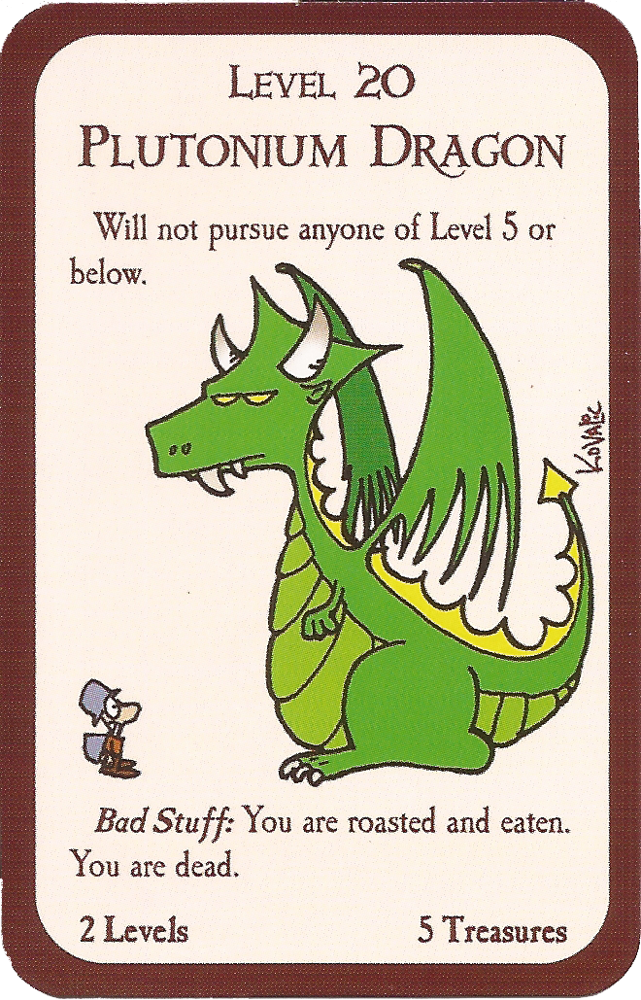

Regras Básicas
- Estrutura: cartas
- Número de jogadores: 3 a 6
- Duração: de 60 minutos ao infinito
Todos os jogadores começam no nível 1, humanos e sem classe. O primeiro jogador a chegar no nível 10 é o ganhador!
Para aumentar o nível, você pode:
- derrotar monstros;
- vender itens (com somatório múltiplo de 1000 para cada nível);
- usar cartas "Suba um Nível" ou alguma outra com efeito semelhante.
Para começar, cada um recebe 4 cartas de cada tipo, portas e tesouros.
É permitido equipar o personagem antes do seu primeiro turno. Posteriormente, só é possível fazer isto no final da sua vez.
A cada turno, o jogador da vez saca uma carta porta virada para cima. Se for um monstro, ele deve ser enfrentado imediamente. Se é maldição, é ativada. Outras cartas são colocadas na mão.

"Mudança de Sexo" é um exemplo de carta do tipo maldição
A segunda ação do jogador poderá ser "procurar encrenca" ou puxar uma segunda porta, virada para baixo.
"Procurar encrenca" significa escolher um monstro da mão e optar por enfrentá-lo. Não poderá ser puxada a segunda porta após a luta se o jogador escolheu esta opção e só pode haver no máximo uma luta por turno.
Nas lutas, o jogador soma seu nível ao seus bônus e o resultado deverá superar o nível do monstro (exceto o Guerreiro, que tem vitória inclusive no empate).
Ganhando a luta, poderá sacar o número de tesouros descritos na carta, bem como aumentar um nível (ou dois, caso a carta especifique).

"Dragão de Plutônio" é um exemplo de carta do tipo monstro
Caso o valor não supere, existem duas alternativas: pedir ajuda ou tentar fugir.
O jogador pode aceitar ajuda de no máximo um oponente. Negociem a contrapartida, mas a vitória dá níveis somente para o que está enfrentando o monstro (dica: NÃO PEÇA OU ACEITE AJUDA DE ELFOS).
Mas se optar por fugir, é preciso jogar um dado. O resultado é 5 ou 6 para a fuga ter êxito (existem cartas que permitem mudar a faixa destes valores). Assim, o monstro é descartado.
Não conseguir fugir significa perder para o monstro, e para isto, leia a "Coisa Ruim" dele e aplique o seu efeito.
Se o efeito é a morte do personagem, com exceção da raça e da classe, todas as suas cartas são perdidas. Os outros jogadores, começando pelo de maior nível, pegam tais cartas uma a uma até acabar. O perdedor poderá reiniciar com novas cartas portas e tesouros, mas mantém o nível adquirido até então.
Equipamentos e outras cartas de efeito permanente podem ser colocadas apenas depois de lutar ou sacar as duas cartas portas do turno.
O máximo de cartas que o jogador pode ter na mão (no final do seu turno) é 5 (exceto anões, que com suas mãos grandes, carregam até 6).
Atrapalhe à vontade a batalha dos oponentes, colocando cartas que alteram os bônus deles ou dos monstros.
As cartas poderão ter exceções às regras gerais ditas aqui. Em caso de dúvidas, vale o que diz na carta.